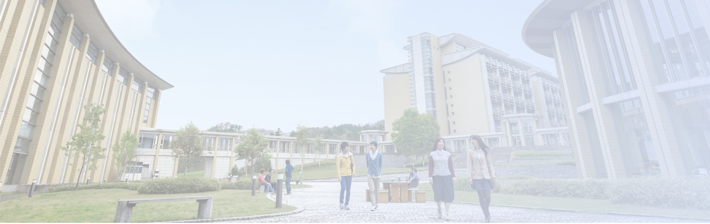
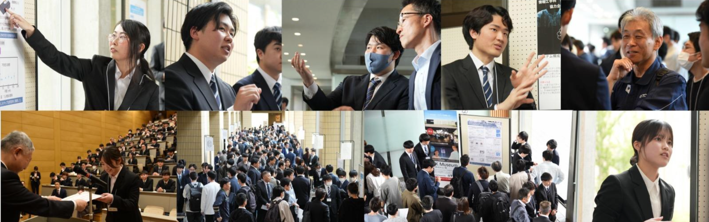

協力企業
情報工学科


機械工学科


経営システム工学科


建築環境システム学科


知能メカトロニクス学科


ふるさと納税で簡単1,000円～
このプロジェクトに寄付する秋田県立大学「CsP（キャップストーンプロジェクト）」
机上の学びを現場のイノベーションに
社会には、教科書の知識だけでは解決できない課題があります。
CsPは、そうした現場の課題に対して、学生の学びや技術を生かし、
新しい価値を生み出すこと＝イノベーションに挑む教育プログラムです。
CsP（キャップストーンプロジェクト）は、大学3年間で培った専門知識や技術をもとに、
学生がチームで一つの社会課題に取り組み、解決策を形にしていきます。
テーマの設定から調査、試作、検証、発表まで主体的に進め、正解のない問いに向き合いながら
現場で実際に使われる成果を目指します。
試行錯誤や対話を重ねる過程は簡単ではありません。しかしその積み重ねこそが、
学びを社会に実装し、現場の変化を生み出す力となります。
CsPは、学生一人ひとりの学びを起点に、社会に新しい価値を生み出す実践の場です。
プロジェクトの詳細を見る

キャップストーンプロジェクト（CsP）
1・2年次で身につけた基礎科目の学びを土台に、
3年次の専門科目で育てた応用力を統合し、
実社会の課題に挑む、本学独自の実践プロジェクトです。
企業や自治体が抱えるリアルな課題に、
学生がチームで調査・分析・提案を行い、
“学んだ知識を現場で使える力”へとつなげる、
学修の集大成に位置づけられています。
私たちのCsP!
ー本荘キャンパス編ー
秋田県立大学システム科学技術学部には、
現代社会を支える技術と仕組みを多角的に学ぶための、
5つの学科があります。
それぞれの学科が専門性を持ちながら連携し、
分野を越えた学びを通して社会課題に向き合っています。
- 情報工学科
- 機械工学科
- 経営システム学科
- 建築環境システム学科
- 知能メカトロニクス学科
5つの学科で広がる、学びのフィールド
ー 数字から見える、学びと実践 ー
5つの学科は、それぞれ異なる専門分野を持ちながら、
共通して「社会課題に向き合う力」を育むことを目指しています。
各学科で学ぶ内容や経験はさまざまですが、
学びをどのように実践へとつなげているのかには違いがあります。
ここからは、その中でも情報工学科に着目し、
学生の学びの現状をアンケート結果から見ていきます。

私たちは情報工学科にフォーカスして、
大学での学びの実態を調査しました。そこで見えてきたのは、
得られた学びを活かす機会が限られているということでした。
アンケートが示す情報工学科の現状
大学のカリキュラム以外でプログラミングや
チームで専攻と関連のある学外活動を
行ったことはありますか？（CsPを除く）
【アンケートが示す情報工学科の現状】
- 授業外でプログラミングや成果物づくりに取り組む機会は、全体として十分に確保されているとは言えない。
- 特に、CsPを除くとチームで専攻と関連した学外活動を経験している学生は約3割にとどまり、実務的・実践的な学びの機会が一部の学生に偏っている。
- また学生によっては、「何を作ればよいかわからない」「経験を積むための入り口が見つからない」と感じ、学びを実践に結びつけにくい状況にある。

ふるさと納税で簡単1,000円～
このプロジェクトに寄付する学生の声
顔写真
情報工学科 × DOWAセミコンダクター秋田
（標的型メール訓練システム）
テーマ：標的型メール訓練システムの構築と教育効果の可視化
お金の使途
訓練用メール配信環境／ログ収集・可視化基盤
活躍した講義
情報セキュリティ／ネットワーク／Webプログラミング
More
資金があれば
- 部署別に最適化した訓練と、定着度まで追跡できる教育システムへ拡張
顔写真
機械工学科 × ニッタ
（CAE解析 × 3Dプリンタフィラメント）
テーマ：CAE解析による3Dプリンタフィラメント押出条件の最適化
お金の使途
CAE計算環境／材料サンプル／試験・測定機材
活躍した講義
材料力学／伝熱・熱力学／流体力学／数値解析
More
資金があれば
- 材料種類を広げた検証と、現場で使える条件表の実装
実社会とつながる
課題に挑戦できる環境
工学的な視点を持って働く現場を経験し、
知識を実践に生かす力を育成します。
チームで協働する経験
コミュニケーション力の向上、
多様なメンバーとの協力・対話のスキルを育みます。
プロジェクト型実習
企画・設計・開発・発表まで、
学びのサイクルを実践できます。
自己効力感（自信）が育つ
成功体験を積み重ねることで、
「できる」という実感が次の挑戦へつながります。
CsPは、学生が実社会と接続しながら学びを深め、新しい挑戦に踏み出せる環境を実現します。 秋田県立大学ではこの学びの場をさらに充実させ、より多くの学生が学びの一歩を踏み出せるように取り組みを進めています。
いただいたご寄付は以下の用途に活用いたします：
チーム開発に必要な機材・環境整備
プロジェクト実習で使用する材料費など
学外講師による講演会費用
実験に必要なクラウド・ツール利用費など
キャップストーンプロジェクトの継続と発展のために、皆様の温かいご支援を賜れましたら幸いです。
いただいたご支援は、未来を切り開く学生たちの挑戦を後押しする大切な原動力となります。
ふるさと納税で簡単1,000円～
このプロジェクトに寄付する